임상심리사-1급 (2010-09-05 기출문제)
1과목: 임상심리연구방법론
1. 다음 중 F분포의 가정에 해당되지 않는 것은?
- 정규분포 가정
- 변량의 동질성 가정
- 관찰의 독립성 가정
- 이분변인의 가정
(정답률: 알수없음)

2. 통계적 추론(statistical inference)의 하나로 모집단의 실제 값이 얼마가 될것이라는 주장에 대하여, 표본이 가지고 있는 정보를 이용하여 사전에 세운 주장이 합당한지 또는 합당하지 않은지에 대한 판정을 내리는 과정을 무엇이라고 하는가?
- 추정(estimation)
- 가설검증(testing hypothesis)
- 임계치(critical value)
- 불편추정량(unbiased estimator)
(정답률: 알수없음)
3. 다음 중 상관분석의 적용을 위해 산점도에서 관찰해야 하는 자료의 특징이 아닌 것은?
- 선형 또는 비선형 관계의 여부
- 이상점의 존재 여부
- 자료의 층화 여부
- 원점(0, 0) 통과 여부
(정답률: 알수없음)
4. 다음 중 연구가설로 가장 적합한 것은?
- 시험에서 틀린 문제수가 적을수록 더 높은 점수가 나올 것이다.
- 여성이 남성보다 성격이 더 좋을 것이다.
- 종업원들의 직무만족도가 높을수록 결근하는 횟수가 적을 것이다.
- 사람은 해를 거듭할수록 나이가 많아질 것이다.
(정답률: 알수없음)
5. 다음 설명 중 틀린 것은?
- 실험집단은 처치를 가한다.
- 통제집단은 실험집단과의 비교를 위해 만들어진 집단이다.
- 인간의 행동을 설명하기 위해 만들어낸 가설적 개념을 변인이라고 한다.
- 구인은 직접 관찰할 수 없다.
(정답률: 알수없음)
6. 연구에 모집하는 대상자의 숫자는 윤리적문제, 비용 및 시간 측면에서 제한되어 있다. 그러나 표본 크기가 너무 작으면 실재하는 중요한 효과를 찾아내지 못할 가능성이 있다. 다음 중 표본의 크기를 결정하는 데 필요한 사항이 아닌 것은?
- 검정력
- 유의수준
- 관심 대상이 되는 최소 효과
- 모집단의 수
(정답률: 알수없음)
7. 과학적 조사에서의 자료 수집 방법에 대한 설명으로 옳은 것은?
- 면접조사는 우편조사보다 응답율이 낮다.
- 전화조사는 다른 조사에 비해 시간과 비용이 더 든다.
- 우편조사는 최소의 경비와 노력으로 광범위한 지역과 대상을 표본으로 삼을 수 있다.
- 집단조사는 응답자들에 대한 통제가 언제나 용이하다.
(정답률: 알수없음)
8. 연구에서 포함된 X, Y 두 변수가 양적 비연속 변수이고 서열척도로 측정된 경우 나타낼 수 있는 적합한 상관계수는?
- 적률상관계수
- 등위상관계수
- 양류상관계수
- 양분상관계수
(정답률: 알수없음)
9. 다음 사례의 조사설계는 어떤 연구에 해당하는가?
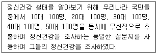
- 종단연구
- 코호트연구
- 추세연구
- 횡단연구
(정답률: 알수없음)
10. 조사대상이 되는 사람들의 태도, 감정, 동기, 욕망 등을 알아보기 위하여 모호한 자극을 제시한 후, 이에 대한 응답을 얻어 연구에 필요한 자료를 수집하는 방법은?
- 사회성측정법
- 투사법
- 유도법
- 실험법
(정답률: 알수없음)
11. 연구자가 주관적으로 판단하여, 모집단을 가장 잘 대표한다고 생각되는 사례들을 표본으로 선정하는 표본추출 방법은?
- 편의 추출
- 층화추출
- 할당추출
- 목적추출
(정답률: 알수없음)
12. 하나의 동전과 주사위를 던졌을 때, 동전은 뒷면이 나오고. 주사위는 2가 나올 확률은?
- 1/5
- 1/12
- 1/6
- 1/3
(정답률: 알수없음)
13. 다음 중 온도처럼 측정값들의 차이에 의미를 부여할 수 있으나, “0”의 의미가 어떠한 의미를 가지고 있지 않고 자의적인 척도는?
- 명목척도(norminal scale)
- 서열척도(ordinal scale)
- 등간척도(interval scale)
- 비율척도(ratio scale)
(정답률: 알수없음)
14. 구조방정식 모형에서 적합도 지수를 선택할 때에는 표본크기에 민감하지 않고 모형의 간명성을 고려하는 적합도 지수를 선택하는 것이 바람직하다. 이러한 기준에서 가장 권장할만한 적합도 지수는?
- CFI 와 NNFI
- NFI 와 GFI
- CFI 와 CFI
- NNFI 와 RMSEA
(정답률: 알수없음)
15. 다음의 연구방법 중 변인들 간의 인과관계를 파악할 수 있는 것은?
- 문헌연구
- 상관연구
- 관찰연구
- 실험연구
(정답률: 알수없음)
16. 다음 중 공변량 분석에서 타당한 자료 해석을 위해 가장 중요한 가정은?
- 회귀선 기울기의 동일성 가정
- 대칭행렬 가정
- 비직선성 가정
- 상호작용 효과 유효성 가정
(정답률: 알수없음)
17. 5명의 학생에게 이들 중 자신이 좋아하는 학생 1명을 선택하라고 하였을 때의 자유도와, 4개 집단의 수학성적을 일원변량분석으로 비교할 대 집단 간의 자유도를 더한 값은?
- 5
- 6
- 7
- 8
(정답률: 알수없음)
18. 다음 중 확률표본추출방법이 아닌 것은?
- 단순무작위표본추출법
- 층화표본추출법
- 군집표본추출법
- 할당표본추출법
(정답률: 알수없음)
19. 다음 사례에서 모수치를 추정할 때 발생할 수 있는 왜곡을 줄이기 위해 사용하는 집중 경향치로 가장 적합한 것은?
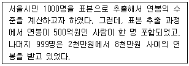
- 최빈치
- 중앙치
- 평균치
- 극단치
(정답률: 알수없음)
20. Osgood은 사물, 인간, 사건 등에 대한 개념이나 느낌을 양극의 뜻을 갖는 대비되는 형요사 군으로 만들어서 의미를 측정하는 의미분석법을 제안하였다. 의미분석에 사용되는 형용사 군은 3차원의 의미공간으로 구분 할 수 있는데 다음 중 3차원에 해당하지 않는 것은?
- 평가차원
- 인식차원
- 능력차원
- 활동차원
(정답률: 알수없음)
2과목: 고급이상심리학
21. 행동주의 관점에서 구분하는 행동장애의 분류와 해당 장애가 틀리게 연결된 것은?
- 행동의 과잉 - 강박행동
- 행동의 결손 - 대인공포증
- 부적절한 강화체계 - 물질사용장애
- 자극과 반응체계의 붕괴 - 성 도착증
(정답률: 알수없음)
22. 다음 중 양극성장애의 치료에 대표적으로 사용되는 약물은?
- 프로작
- 리튬
- 할리페리돌
- 리탈린
(정답률: 알수없음)
23. 다음 중 나머지 셋과 다른 성격장애의 진단기준은?
- 직계가족 이외에는 가까운 친구나 마음을 털어놓는 친구가 없다.
- 신체적 착각을 포함한 유별난 지각경험을 한다.
- 괴이하고, 엉뚱하거나 특이한 행동이나 외모를 보인다.
- 과도한 사회적 불안이 친밀해져도 줄어들지 않고, 이는 자신에 대한부정적인 판단 때문이라기보다는 편집적인 두려움 때문이다.
(정답률: 알수없음)
24. 다음 중 치매에 대한 설명으로 틀린 것은?
- 의식장애가 있다.
- 기억장애가 있다.
- 획득된 지능의 감퇴가 일어난다.
- 대부분 비가역적이고 진행성이다.
(정답률: 알수없음)
25. 다음 사례에서 A씨의 진단으로 가장 먼저 고려할 것은 무엇인가?
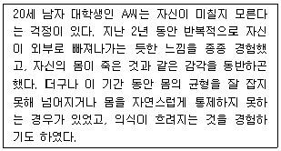
- 해리성 둔주(dissociative fugue)
- 이인증 장애(depersonalization disorder)
- 공황장애(panic disroder)
- 신체변형장애(body dysmorpic disorder)
(정답률: 알수없음)
26. 다음 사례에서 사용된 치료기법은 무엇인가?
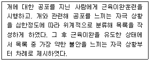
- 체계적 둔감법
- 혐오적 조건형성
- 행동조성법
- 토큰이용법
(정답률: 알수없음)
27. 다음 사례에서 A씨에게 진단내릴 수 있는 장애는 무엇인가?
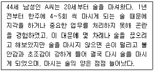
- 알코올 의존
- 알코올 남용
- 알코올 중독
- 알코올 금단
(정답률: 알수없음)
28. 다음 중 Cloninger의 알코올 의존의 두 가지 유형에 대한 설명으로 옳은 것은?
- 제1형 알코올 의존은 증상이 늦게 발달하는 편이다.
- 제1형 알코올 의존은 남자에게만 나타난다.
- 제2형 알코올 의존은 유전적 요인과 환경적 요인이 복합적으로 관련된다.
- 제2형 알코올 의존은 반사회적 문제를 비롯한 사회적 문제를 야기할 가능성이 낮은 편이다.
(정답률: 알수없음)
29. 특정 공포증에 관한 설명으로 틀린 것은?
- Mowrer 등의 2요인설에 따르면, 공포회피반응은 정적 강화에 의해 유지된다.
- DSM-Ⅳ의 특정공포증은 DSM-Ⅲ-R에서는 단순공포증으로 불렸던 심리장애이다.
- Mowrer 등의 2요인설에 따르면, 공포반응은 고전적 조건형성에 의해 습득된다.
- 정신역동이론에서는 억압, 전치, 투사의 방어기제가 공포증의 형성에 기여한다고 설명한다.
(정답률: 알수없음)
30. 다음 성장애 중 절정감 장애에 해당하는 것은?
- 조루증
- 질경련증
- 성욕감퇴장애
- 남성발기장애
(정답률: 알수없음)
31. 다음 중 범불안장애와 가장 관련이 깊은 증상은?
- 공포(fear)
- 부유불안(free-floating anxiety)
- 상태불안(state anxiety)
- 상황적 자율신경계 불안(situational automatic anxiety)
(정답률: 알수없음)
32. 아동기 주의력 결핍/과잉행동장애(ADHD)에 흔히 동반되는 장애가 아닌 것은?
- 의사소통장애
- 운동조정장애
- 학습장애
- 아스퍼거 장애
(정답률: 알수없음)
33. 다음 중 정신분열병 진단을 내리기 위해 다른 증상 확인이 추가로 필요한 경우는?
- A씨: 모든 음식에서 쓴 맛이 난다며 아내가 음식에 건강을 해치는 약을 탔다는 피해망상을 보임
- B씨: 보이지 않는 전파가 자신의 생각을 다 빼내어 세상에 전파시킨다는 피해망상을 보임
- C씨: 자신이 하려는 행동을 금지하거나 다른 행동을 지시하는 환청이 지속적으로 들림
- D씨: 두 사람의 남녀가 서로 싸우며 대화하는 환청이 지속적으로 들림
(정답률: 알수없음)
34. 다음 중 용어와 그에 대한 예가 틀리게 작지어진 것은?
- 자극 일반화 : 하얀 쥐와 듣기 싫은 쇳소리를 함께 반복적으로 제시하자 하얀 쥐를 무서워하게 된 아이가 하얀 말도 무서워하게 되었다.
- 2차적 조건형성 : 종소리에 침을 흘리도록 학습된 개에게 종소리와 손뼉 치는 소리를 짝지어 반복적으로 제시하자 개는 손뼉 치는 소리에도 침을 흘리게 되었다.
- 부적강화: 시끄러운 소음이 들리는 상자 안에서 고통스러워하던 고양이가 우연히 상자 속 버튼을 누르자 소음이 멈추었다.
- 소거: 술을 마시는 사람에게 술을 마실 때마다 구토를 일으키는 약물을 복용하게 해 술을 회피하도록 하였다.
(정답률: 알수없음)
35. 다음 중 정신분열병 환자의 재입원 발생과 가장 관련이 높다고 알려진 현상은?
- 이중 구속(double bind)
- 표현된 정서(expressed emotion)
- 자아경계(ego boundary)의 붕괴
- 슈나이더의 1급 증상
(정답률: 알수없음)
36. 특정공포증과 사회공포증을 치료하는 데 일반적으로 가장 효과적이라고 알려져 있는 일반적인 방법이 순서대로 작지어진 것은?
- 정신분석적 치료 - 약물치료
- 정신분석적 치료 - 행동치료
- 약물치료 - 인지행동적 집단치료
- 행동치료 - 인지행동적 집단치료
(정답률: 알수없음)
37. 다음 중 정신분열병의 양성, 음성증상에 대한 설명으로 옳은 것은?
- 음성증상은 도파민 체계의 이상과 관련된다.
- 양성증상은 만성화되며 약물에 잘 반응하지 않는다.
- 음성증상의 대표적인 것은 환청과 망상이다.
- 잔류형 정신분열증의 주된 증상은 음성증상이다.
(정답률: 알수없음)
38. 다음 중 지능평가에 관한 설명으로 틀린 것은?
- 집단으로 실시된 지능검사에 의거해서는 정신지체진단을 내릴 수 없다.
- 정신지체의 중등도 수준은 IQ 35~40수준에서 50~55수준까지의 범위이다.
- 정신지체의 경도 수준은 초등 2학년 수준정도까지의 교육이 가능하다.
- 19세 이후에 발병한다면 정신지체 진단을 내릴 수 없다.
(정답률: 알수없음)
39. 수면장애(Sleep Disorder)에 관한 설명으로 틀린 것은?
- 불면증에 걸리기 쉬운 사람들의 주요한 심리적 특성은 높은 각성 수준을 유지하는 것으로 대표적인 치료법으로는 자율훈련(autogenic training)이 있다.
- 과다 수면증은 빠르게 잠들고 지속적인 수면을 취하나 아침에 깨어나기 어렵고 졸음과 피곤에서 헤어나지 못하며 잠에 취한 상태가 지속된다.
- 일주기 리듬 수면장애는 수면-각성 주기의 변화로 인해 과도한 졸음이나 불면이 반복되는 경우이다.
- 악몽장애 환자의 경우 무서운 굼에서 개어난 후, 신속하게 정상적인 의식을 회복하나 대부분 꿈의 내용을 상세하게 기억하지 못한다.
(정답률: 알수없음)
40. 다음 중 나머지 장애와 다르게 분류되는 인격장애는?
- 분열형 인격장애
- 경계성 인격장애
- 반사회적 인격장애
- 자기애성 인격장애
(정답률: 알수없음)
3과목: 고급심리검사
41. 단축형 지능검사를 실시할 수 있는 상황과 가장 거리가 먼 것은?
- 정신장애를 감별하고 성격의 일부분인 지능에 대한 대략적인 평가가 목적인 경우
- 과거 1년 이내에 full battery 검사를 받은 적이 있고, 임상적으로 특이한 변화가 없는 경우
- 임상 평가의 목적이 피검사자의 전반적인 지능수준의 판단인 경우
- 평가의 목적이 신경심리학적 특성을 파악하고자 하는 경우
(정답률: 알수없음)
42. K-WAIS의 소검사 중 공통성 문제 점수에 영향을 미치는 요인과 가장 거리가 먼 것은?
- 주의 집중력
- 사고의 유연성
- 부정적 태도
- 개인적 흥미와 관심분야
(정답률: 알수없음)
43. MMPI 2-0 코드 유형을 보이는 사람에 대한 적합한 진단적 해석은?
- 사고의 분열과대인관계 회피성을 보인다.
- 경미하나 만성적이고 성격적인 우울증을 보인다.
- 화나고 우울한 상태로, 타인에게 적대적이다.
- 다양한 신체증상과 더불어, 감정의 기복을 보인다.
(정답률: 알수없음)
44. MMPI에서 타당도 척도의 프로파일(L 40, F 75,K 43)과 가장 거리가 먼 것은?
- 병역을 기피하기 위한 꾀병 환자
- 최근 남자친구와 헤어진 후 죽고 싶다고 호소하는 여대생
- 외견상 잘 나타나지 않으나 사고장애가 있는 정신증 환자
- 자아 정체성의 위기를 겪고 있는 청소년
(정답률: 알수없음)
45. 다음 ( )안에 들어갈 가장 알맞은 것은?
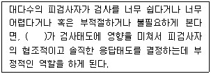
- 내용 타당도
- 준거 타당도
- 구성 타당도
- 안면 타당도
(정답률: 알수없음)
46. K-WAIS를 실시하는 절차에 관한 설명으로 가장 적합한 것은?
- 언어장애와 같은 특별한 결함이 있는 수검자에게는 실시요강의 절차를 엄격히 고집하기보다 동작성 검사를 먼저 실시하여 가벼운 기분으로 검사에 임하도록 유도할 수 있다.
- 언어성 검사에서 대답이 불완전하거나 불분명한 경우 자세히 대답을 해달라고 요구해서는 안된다.
- 지능검사는 성능검사이기 때문에 최대한 솔직한 응답을 하도록 유도한다.
- K-WAIS는 표준화된 검사이기 때문에 실시와 채점, 해석에 관한 특별한 훈련을 필요로 하지 않는다.
(정답률: 알수없음)
47. 심리학적 평가보고서 작성법에 대한 설명으로 올바르지 않은 것은?
- 심리학적 평가보고서는 일차적으로 의뢰된 문제에 대한 평가 결과를 중심으로 기술 되어야 한다.
- 보고서를 작성할 대는 가능한 전문적 요어를 사용하여 전문성이 부각되도록 진술하여야 한다.
- 심리평가의 결과는 충분한 검토를 거쳤다 하더라도 현실이 아닌 하나의 가설일 수 있다는 사실을 인정하여야 한다.
- 심리학적 평가보고서를 작성할 때는 심리검사 결과뿐만 아니라 면담, 행동관찰을 통해 알게 된 정보도 함께 고려하여 작성한다.
(정답률: 알수없음)
48. MMPI 검사의 타당도 척도 중 ?(무응답척도)가 상승할 수 있는 이유와 가장 거리가 먼 것은?
- 부주의
- 불충분한 읽기 수준
- 채점이나 기록상 오류
- 의미 있는 답변에 요구되는 정보나 경험이 없을 때
(정답률: 알수없음)
49. 유동 지능에 대한 설명으로 틀린 것은?
- 선천적으로 주어지는 능력이다.
- 중추신경계의 성숙에 비례하여 발달하고 쇠퇴한다.
- 언어이해능력, 논리적 추리력, 상식 등에서 확인된다.
- 새로운 상황을 만났을 때의 문제해결능력에서 나타난다.
(정답률: 알수없음)
50. 신경심리평가에서 치매와 우울증의 감별점으로 적절하지 않는 것은?
- 동기가 부족한 우울증 환자는 모른다는 대답을 많이 하는 반면 치매 환자들은 생각 없이 틀린 답을 하는 경향이 있다.
- 우울증 환자들은 자신이 손상된 인지 능력에 대해 좀 더 예민하게 자각하며 더 크게 받아들인다.
- 구성과제에서 치매 환자에 비해 우울증 환자는 충분한 시간과 격려가 주어져도 완성하지 못하고 단편적인 반응을 보인다.
- 기질적 치매는 우울증과는 다리 실어증, 실행증, 실인증이 나타난다.
(정답률: 알수없음)
51. 연속수행검사에서 충동성 혹은 억제능력의 부족을 나타내는 대표적인 지표는?
- 누락오류
- 오경보오류
- 정반응
- 반응시간
(정답률: 알수없음)
52. 직업 흥미검사에 관한 설명으로 옳은 것을 모두 짝지은 것은?
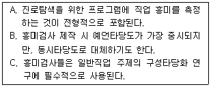
- A
- A, B
- A, C
- A, B, C
(정답률: 알수없음)
53. 아동용 심리검사에 대한 설명으로 틀린 것은?
- 인물을 그리는 그림검사는 어린 시절의 발달환경을 측정하기 위해 투사적 성격검사로 개발된 것이다.
- BGT의 도형을 오류없이 모사할 수 있는 나이는 10세경 이다.
- HTP 검사에서 나무그림은 보다 심층적 수준의 자기상을 반영한다.
- Rorschach 검사에서 적절한 부분반응이 가능해지는 시기는 6~7세경이다.
(정답률: 알수없음)
54. 편차 IQ 규준을 사용하는 지능검사에서 지능지수가 130점이 나왔다면 해당되는 백분위 점수는?
- P62.26
- P68.26
- P84.13
- P97.72
(정답률: 알수없음)
55. 다음 중 Wechsler 지능검사의 신뢰도를 추정하는 방법으로 적합하지 않은 것은?
- 검사-재검사법
- 반분신뢰도 중 기우 절감법
- 반분신뢰도 중 전후 절감법
- 내적일관성 방법
(정답률: 알수없음)
56. 다음 특성을 보이는 내담자의 다면적 인성검사 상승척도 쌍으로 추정될 수 있는 것은?
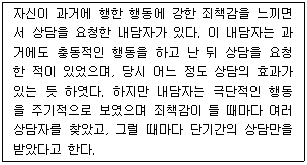
- 2-4
- 4-7
- 3-4
- 4-8
(정답률: 알수없음)
57. 좌측 전두엽 손상을 보이는 환자를 면담할 때 관찰될 수 있는 행동은?
- 언어를 이해하지 못한다.
- 말을 유창하게 하지 못한다.
- 우측 시야에 놓인 물건을 자각하지 못한다.
- 간단한 계산을 하지 못한다.
(정답률: 알수없음)
58. 다음 중 BGT 검사에 관한 설명으로 틀린 것은?
- 뇌의 기질적 장애를 판별하려는 목적으로 사용된다.
- 문화나 언어적인 제약을 받지 않는 검사이다.
- 정신지체를 진단하는데 도움이 된다.
- 검사 초반보다는 라포 형성 이후에 사용하는 것이 좋다.
(정답률: 알수없음)
59. MMPI의 4-9/9-4 척도 상승 형태 분석에 대한 설명으로 틀린 것은?
- 반사회적 인격 장애 특징을 나타낸다.
- 도덕 수준이 낮으며 자기애적이고 쾌락을 추구한다.
- 행동적 수준에서 타인과의 마찰이 많고 정열적이다.
- 정신치료에 수용적이므로 통찰적 정신치료가 효과적이다.
(정답률: 알수없음)
60. 심리검사에 관한 윤리적 쟁점으로 적합하지 않은 것은?
- 부당한 검사 사용으로부터 수검자를 보호하기 위해 자격을 갖춘 검사자가 검사를 사용해야 한다.
- 검사의 목적이 무엇이든 사생활 보호에 대한 검사의 적합성 및 사전 동의를 포함해야 한다.
- 심리적 혼란을 야기하더라도 검사를 정확하게 채점하고 해석하여 검사 결과를 있는 그대로 알려주어야 한다.
- 문화가 서로 다른 집단에 실시할 경우 검사결과 해석 시 문화적 차이를 고려해야 한다.
(정답률: 알수없음)
4과목: 고급임상심리학
61. 임상심리학의 연구방법론에 관한 설명으로 틀린 것은?
- 통제된 관찰 : 우울증 환자의 의사소통 패턴에 관하여 연구하기 위해 우울증 환자와 정상인을 함께 집단으로 구성하여 1시간 동안 토론 하게 한 후 주요 의사소통 5가지 패턴을 보이는지에 대하여 평가한다.
- 역학조사 : 관내 초등학생들을 대상으로 주의력 장애의 가능성을 평가하고, 세부 영역 상 어떤 주의력 문제를 보이는지 주의력 장애의 패턴에 대하여 조사한다.
- 상관법: 사회적 지지관계의 양과 질이 우울증상과 어느 정도 관련이 있는지를 보기 위하여 사회적 지지관계 척도를 사용한 사회적 관계의 특성을 평가하고 우울증상 설문지를 실시하여 비교/분석한다.
- 사례연구 : 인터넷 중독을 보이는 중학생들을 대상으로 하여 1시간 가량 인터넷을 사용하도록 하고 이들이 방문한 사이트, 각 사이트에 머물었던 시간, 클릭 회수등에 대하여 분석한다.
(정답률: 알수없음)
62. 다음 중 행동치료 기법이 아닌 것은?
- 체계적 둔감법
- 역설적 의도
- 노출치료
- 유관성 관리
(정답률: 알수없음)
63. 다음 중 합리적 정서행동치료(REBT)의 비합리적 신념에 해당하지 않는 것은?
- 절대적인 강요성(Absolutistic musts)
- 파국화(Awfulizing)
- 낮은 인내력(I-can't-stand-it)
- 역경(Adversity)
(정답률: 알수없음)
64. 다음 중 임상심리학자의 교육적 기능과 가장 거리가 먼 것은?
- 6학년 교사를 대상으로 학급의 남학생과 여학생들 사이의 갈등을 중재하는 방법에 대한 조언
- 간호사를 대상으로 심리치료에 관한 워크샵 수행
- 회사 직원을 대상으로 스트레스 관리법에 관한 강의
- 5명의 임상심리 수련생을 대상으로 심리평가에 관한 사례지도
(정답률: 알수없음)
65. 일반적인 자문의 단계를 순서대로 바르게 나열한 것은?
- 상황의 평가 → 질문의 이해 → 중재전략과 반응개발 → 종결 → 추적조사
- 중재전략과 반응개발 → 상황의 평가 → 질문의 이해 → 추적 조사 → 종결
- 상황의 평가 → 중재전략과 반응개발 → 질문의 이해 → 추적 조사 → 종결
- 질문의 이해 → 상황의 평가 → 중재전략과 반응개발 → 종결 → 추적조사
(정답률: 알수없음)
66. 다음 중 정신장애의 재활 모델에서 장애 때문에 다른 사람들로부터 상대적으로 불이익을 받는 것을 의미하는 개념은?
- 손상
- 진단
- 핸디캡
- 병리
(정답률: 알수없음)
67. 어떤 전문가가 다른 전문가의 비윤리적 행위를 의심하게 될 경우 가장 먼저 취하여야 할 행동은?
- 당사자에게 주의를 환기시키고 비공식적 해결을 위한 시도를 한다.
- 피해자의 진술 및 사실 관게 등의 증거를 확보한다.
- 당사자에게 인지한 사실을 통보하고 해동 윤리위원회에 신고한다.
- 사태 해결을 위해 법률적 적법절차를 개시한다.
(정답률: 알수없음)
68. 임상심리학의 과학자-전문가 모델에 관한 설명으로 틀린 것은?
- 진단, 치료, 연구 외에도 일반심리학, 행동의 정신역동, 인접 학문 분야의 교육과정이 강조된다.
- 1949년 Boulder 모델로 알려져 있으며, 박사학위 과정 취득을 요구한다.
- 임상심리학자는 일차적으로 심리학자이고 이후 임상가가 되어야 함을 강조하는 모델이다.
- 1970년대 Vail 모델로 계승되어 과학과 임상 실습을 모두 포용하는 특징을 보인다.
(정답률: 알수없음)
69. 건강과 다양한 심리적 요인과의 관계에 관한 설명으로 잘못된 것은?
- 사회적 지지 등과 같은 사회심리적인 요인들도 스트레스에 중요한 변인으로 작용한다.
- Type A 성격이나 적개심과 같은 성격적인 요인들이 심장관련 질병과 연관되어 있다.
- 흡연이나 과도한 음주 등의 잘못된 행동, 습관, 생활양식들은 인지적인 요인이나 행동적 학습에 의해 형성된 것이다.
- 비만 등과 같은 유전적 및 신체적인 요인의 문제에 대해서는 약물치료와 외과적 수술치료가 효과적이며, 심리적 개입은 제한적이다.
(정답률: 알수없음)
70. A씨는 최근 다음과 같은 행동특징을 보이고 있다. A씨가 주로 사용한 방어기제는 무엇인가?
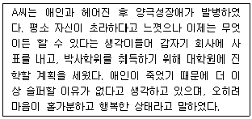
- 부인, 반동형성
- 치환, 투사
- 투사, 억압, 행동화
- 투사, 부인, 주지화
(정답률: 알수없음)
71. 다음 중 면접에 대한 설명으로 틀린 것은?
- 면접은 환자의 과거사를 알려주고 환자가 대인관계상황에 참여하고 관찰될 수 있는 기회를 제공해 준다.
- 의식으로부터 해리된 정보나 환자에 의해 언어화되기 어려운 정보를 얻기 위해서 면접이 필요하다.
- 면접의 신뢰도를 높이기 위해서 구조화된 면접이 제안되기도 하며, 인성질문지는 구조화된 면접의 한 형태로 볼 수 있다.
- Adler 학파의 심리학자는 개인의 출생순위와 가족 내 위치에 관해서 더 알려고 한다.
(정답률: 알수없음)
72. 정신분석적 치료의 기본 입장이 아닌 것은?
- 무의식의 의식화를 통해 본능과 충동을 강화된 자아의 통제 하에 둔다.
- 표면적인 행동의 변화는 내적 갈등의 해결없이는 무의미하다.
- 치료자는 내담자가 저항할 때도 중립적 자세를 견지한다.
- 치료자는 내담자의 3가지 성격구조 중에서 자아를 우선시하는 관계를 맺는다.
(정답률: 알수없음)
73. 신경심리검사를 실시할 대 검사 점수에 영향을 미치는 변인이 아닌 것은?
- 성별과 나이
- 꾀병여부와 병전 능력
- 손잡이와 체중
- 교육수준과 동기
(정답률: 알수없음)
74. 국내 임상심리학자들의 주된 활동역과 가장 거리가 먼 것은?
- 환자의 심리적인 문제나 증상들에 대하여 심리치료의 실행
- 임상적 주요 이슈들에 대한 연구를 수행
- 환자의 증상이나 증상의 원인에 대한 심리검사를 통한 진단과 평가
- 가벼운 증상의 경우 처방에 의한 투약을 통해 증상을 개선
(정답률: 알수없음)
75. 행동적 접근 및 인지행동적 접근에서 주로 사용하는 치료기법과 증상이 가장 적합하지 않게 짝지어진 것은?
- 스트레스를 많이 경험하는 환자를 대상으로 하여 긴장된 스트레스 상황에서 긴장을 해결하기 위한 “이완기법”을 사용함
- 광장공포증이 있는 사람들에게 많은 사람들 앞에서 연설을 하도록 하는 “노출치료”를 사용함
- 극심한 소극성을 가진 환자들을 대상으로 하여 다른 사람에게 자신이 요구하는 바를 말하도록 하는 “자기주장훈련”을 실시함.
- 인터넷 중독에 빠진 중학생을 대상으로 하여 컴퓨터 사용 시 처벌을 가하는 “혐오치료”를 실시함
(정답률: 알수없음)
76. 행동치료 시행에 대한 설명으로 옳은 것은?
- 신체적 고통으로 우는 아동의 행동도 조작적 절차를 통해서 완화시킬 수 있다.
- 아동의 경우 주 치료자 이외의 주변인물에 의한 조작적 절차는 치료효과가 거의 없다.
- 혐오치료는 혐오자극이 보다 긍정적인 자극으로 변환되게 하는 조건형성 절차이다.
- 혐오치료는 문제행동이 생명이나 건강에 위협적일 경우로 한정되어 적용되는 것이 좋다.
(정답률: 알수없음)
77. Rorschach 검사에서 1번 카드의 응답내용과 관계 깊은 항목은?
- 새롭고 친숙하지 않은 상황에서의 반응
- 성적인 갈등
- 대인관계
- 권위적인 인물과의 관계
(정답률: 알수없음)
78. 다음 중 행동평가에서 참여관찰의 주요 이점을 설명한 것은?
- 행동평가에 필요한 비용이 적게 들고 자료를 쉽게 얻을 수 있다.
- 내담자에게 문제행동에 대한 이해를 증가시킬 수 있어 치료과정이 가속화 된다.
- 자신의 사적인 행동까지 평가가 가능하기 때문에 평가의 정확도를 높일 수 있다.
- 광범위한 자연장면에서 행동을 관찰할 수 있기 때문에 생태학적 타당도를 높일 수 있다.
(정답률: 알수없음)
79. 성격의 범주적 진단분류에 대한 설명으로 틀린 것은?
- 질적인 차이를 강조한다.
- 전문가 간의 의사소통이 쉽다.
- 전문가 간의 합의를 이끌어내기 쉽다.
- 전문가 간의 객관적 결정의 가능성이 높다.
(정답률: 알수없음)
80. 다음 중 지능검사에 대한 설명으로 틀린 것은?
- 유동분석적 요인은 새로운 문제를 해결하는데 요구되는 형태 및 비언어적 자극들과 관련된 인지적 기술들을 측정한다.
- 결정화된 능력 요인은 문제해결을 위한 언어적 개념과 수량적 개념을 획득하고 적용하기 위해 필요한 인지적 기술을 측정한다.
- 지능은 교육에 의해 그리고 주류 문화에 노출됨으로써 향상될 수 있다.
- WAIS-R의 세 요인은 언어적 이해력, 지각적 조직화 능력, 운동협응력 등을 포함한다.
(정답률: 알수없음)
5과목: 고급심리치료
81. 정신사회재활의 기본 목표와 가장 거리가 먼 것은?
- 각 개인의 능력을 사회적응이 가능하도록 호전시킴
- 주거환경 및 사회적 환경의 변화를 최대화 함
- 병전 기능을 회복하여 양질의 삶을 유지하도록 함
- 증상이 더 이상 악화되지 않고 유지되도록 함
(정답률: 알수없음)
82. 다음 중 정신분열증 환자관리에 관한 설명으로 틀린 것은?
- 환자가 정신과적 증상이 심할 때는 평소보다 더 예민해지고 피해의식을 가지는데, 이때는 환자와 평소 사이가 나쁜 가족은 환자를 만나지 않도록 하는 것이 좋다.
- 환자의 이상행동이 가족에게 많은 피해를 주더라도 환자의 증상이기 때문에 가족들이 그런 행동을 못하도록 관리하면 안 된다.
- 환자가 환청을 보일 때 침착하게 환자의 입장을 이해하는 태도로 자세하게 구체적으로 물어본다.
- 만약 환자의 망상 때문에 가족이 위험하다고 생각되면 주치의에게 빨리 연락하고 입원시키는 것이 좋다.
(정답률: 알수없음)
83. 인지행동치료에서 틀린 가정이나 잘못된 개념을 이끄는 체계적 오류와 인지적 왜곡 중 다음은 무엇에 관한 설명인가?
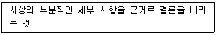
- 선택적 추론
- 과잉 일반화
- 근거 없는 추론
- 극단적 사고
(정답률: 알수없음)
84. 다음 사례에서 A양에게 읽기 이해력을 증진시키기 위한 가장 적합한 개입은?
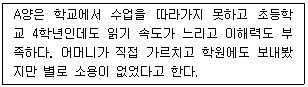
- 단어 하나하나에 집중하기보다는 덩어리나 군 단위로 읽도록 한다.
- 읽기의 목적이 무엇인지 파악하도록 한다.
- 조용히 배경음악을 틀고 혼자서 읽도록 한다.
- 기본 시선은 무선의 주앙에 두도록 한다.
(정답률: 알수없음)
85. 중독환자에 대한 인지행동치료의 통합적 사회-인지적 저항모델에서 “나쁜 일은 나쁜 사람에게 발생한다.”는 식의 신념으로써 환자의 저항이 있는 경우를 무엇이라고 하는가?
- 정당성 인정 저항
- 자기일관성 저항
- 도덕성 저항
- 심리도식(스키마) 저항
(정답률: 알수없음)
86. 누군가 우리를 멍청하다고 생각하더라도 그것이 그리 비극적인 것이 아님을 느끼게 하는 RET의 절차로 불친절한 웨이터에게 팁을 거부하거나 공구점에서 왼손잡이용 공구를 비치하라고 요구하는 등의 다소 과장된 행동을 하게 하는 절차는?
- 역할연기
- 수치심-공격연습
- 유머사용 훈련
- 신념 논박하기
(정답률: 알수없음)
87. 자신 및 타인을 해칠 위험성에 대한 평가에서 자살의 위험 요소에 대한 설명으로 틀린 것은?
- 자살에 대해 구체적으로 질문하는 것은 어려운 문제를 다루는데 면담자가 미숙하다는 것을 반영한다.
- 배우자가 없는 것은 자살의 위험요인이고 돌보아야 할 자녀가 있다는 것은 자살을 방지하는 보호요인이다.
- 자살에 대한 이야기는 하기 어려운 주제이나 면담 시마다 반드시 물어보아야 한다.
- 자살 시도는 여성이 더 많이 하고, 자살 성공률은 남성에서 높다.
(정답률: 알수없음)
88. 비행 청소년의 심리치료에 대한 설명으로 틀린 것은?
- 비행 청소년은 시밀적 욕구가 다양하기 때문에 문제 해결에 다각적 접근이 필요하다.
- 면담을 통한 전통적인 치료만으로는 한정된 효과 밖에 얻지 못한다.
- 청소년 비행 문제에 대해 보호조정과 정신 건강의 측면을 함께 다루어야 한다.
- 처벌이나 훈육 같은 행동주의적 방법은 내담자의 이해가 따르더라도 사용해서는 안 된다.
(정답률: 알수없음)
89. 다음 중 노인상담의 특성과 가장 거리가 먼 것은?
- 내담자의 저항이 약하다.
- 내담자의 경험의 폭이 넓다.
- 상담자보다 내담자의 연령이 높다.
- 새로운 삶에 대한 의지가 약하다.
(정답률: 알수없음)
90. 인간중심 치료에 대한 설명으로 틀린 것은?
- 일치성은 치료자가 진실하고 통합되어 있고 솔직하다는 뜻이다.
- 내담자를 한 인간으로서 진정하고 깊이 있게 관심을 가지되 이것은 무조건적이어야 한다.
- 치료자는 치료회기 동안 모든 상호작요에서 드러나는 경험과 감정을 민감하고 정확하게 이해하는 공감이 필요하다.
- 일치성, 무조건적 긍정적 관심 공감적 이해는 연속적이라기보다는 실무율적으로 존재한다.
(정답률: 알수없음)
91. 심리치료 상담에서 방어를 다루는 방법으로 적합하지 않은 것은?
- 자아 강도를 고려하여 방어를 그대로 두는 것이 유익하다면 무시하는 것도 방법이 된다.
- 조증 환자처럼 기분 상태가 비정상적인 환자는 주의를 다른 곳으로 전환시키는 것도 효과적이다.
- 해석은 자신의 문제를 표현하는데 어려움을 겪는 환자에게 자신의 행동을 직면하도록 하기 위해 일반적으로 직면에 앞서 상용되는 방법이다.
- 자신이 방어기제를 구사하고 있음을 직면하기 위해서는 자신의 문제에 대해 어느 정도 통찰이 있어야 한다.
(정답률: 알수없음)
92. 식사량을 조절하지 못하는 비만 아동에게 식탁에서 식사하기와 군것질 안하기를 목표로 설정하여 스티커 제도를 시행하였다. 3개월간 행동수정을 성공적으로 적용한 후, 새로운 식사 행동을 유지시키고자 할 때 효과적이지 않은 방법은?
- 자연환경에서의 강화물로 대체한다.
- 표적 상황에서 간헐적 강화계획을 이용한다.
- 목표 반응 뒤에 즉각적으로 강화물을 제공한다.
- 자기통제를 할 수 있도록 돕는다.
(정답률: 알수없음)
93. 노출치료에 관한 설명으로 틀린 것은?
- 실생활 노출은 직접 경험하게 하는 방법이다.
- 불안을 유발하는 상황에 내담자를 반복적으로 안전하게 노출시킨다.
- 체계적 둔감화에서 근육이완법 이외에도 다양한 이완반응을 사용한다.
- 체계적 둔감법은 실생활 노출보다 광범위하게 사용할 수 있다.
(정답률: 알수없음)
94. 상담계획의 수립 과정에서 치료자가 유의할 사항에 대한 설명으로 가장 적합한 것은?
- 내담자가 초기에 보이는 불만은 차차 해소되기 때문에 긍정적 반응에 초점을 유지한다.
- 내담자의 의사전달 방식은 언어적 작업인 심리치료에서는 부차적으로 취급되어야 한다.
- 치료란 내담자가 호소하는 문제들을 위주로 진행되어야 한다.
- 내담자의 문제 정의 및 해결방안은 치료의 진행에 따라 작업가설로서 검증되어야 한다.
(정답률: 알수없음)
95. 성매매 청소년 상담에서 상담 단계별 과제와 특징에 관한 설명으로 틀린 것은?
- 의뢰단계 : 상황을 정확하게 기술할 수 있도록 편안한 분위기를 조성한다.
- 평가단계 : 성매매 과정, 과거 가출경험과 현재 가족의 지지체계를 평가한다.
- 치료단계 : 반드시 의료검진을 받도록 하고, 필요한 경우 법률정보를 제공한다.
- 사후관리단계 : 재비행 방지를 위해 지속적인 사후 상담 및 조정을 한다.
(정답률: 알수없음)
96. 심리치료 시 위기 상황에서 평가해야 할 사항과 가장 거리가 먼 것은?
- 의지
- 생각
- 충동성
- 법적보고
(정답률: 알수없음)
97. AA(Alcoholics Anonymous)의 12단계 모델에 대한 설명으로 틀린 것은?
- AA는 근본적으로 영적인 프로그램이며 따라서 치료가 아니라 삶과 존재의 방법으로 12 단계 모델의 근간을 이룬다.
- AA의 12단계 실천은 정직, 겸손, 인내 등의 성장으로 특정지어지는 영적인 성장을 가져오고, 이것이 알코올 중독자의 회복 수단이 된다.
- AA의 12단계 중 알코올에 대해서는 첫 단계에서만 언급되어 있을 뿐 다른 것은 영적 과정과 관련되어 있다.
- 알코올 중독자의 음주는 영적인 삶과 성장에 대한 잘못된 인간 욕구의 반영이기 때문에, 단주만이 알코올 중독자의 삶을 변화시킬 수 있는 유일한 대안은 아니라고 하였다.
(정답률: 알수없음)
98. 다음 중 직업재활에 관한 설명으로 틀린 것은?
- 정신재활의 궁극적인 목적이다.
- 직업능력보다는 정신과적 장애 수준에 대한 고려가 우선이다.
- 지원취업모형은 일단 취업을 시킨 후에 부족한 기술을 가르치는 방식이다.
- 효과를 높이기 위해서는 취업 전 훈련기간은 가능한 짧게 줄이는 것이 권장된다.
(정답률: 알수없음)
99. 다음 중 현실 치료의 인간관계에 관한 설명으로 틀린 것은?
- 현실치료의 선택이론에 따르면, 인간은 외부의 어떤 힘에 의해 동기화되는 공백 상태로 태어난다.
- 인간은 다섯 가지 유전적 욕구(생존, 사랑과 소속, 힘, 자유, 재미)를 가지고 있다.
- 인간은 태어나서 죽을 대까지 행동하며, 행동은 내적동기와 선택의 결과라는 사실을 강조한다.
- 인간이 행하는 것이 우리의 선택이라면, 그에 대해 책임을 져야 한다.
(정답률: 알수없음)
100. 정신병질적(반사회적) 성격 소유자에 대한 설명으로 틀린 것은?
- 다른 사람들에 비해 공격성이 높다.
- 살아있다는 느낌과 좋은 기분을 얻기 위해서 더 강렬하고 더 아슬아슬한 경험을 필요로 한다.
- 힘을 행사하고 싶은 욕구가 강하다.
- 감정 표현을 잘한다.
(정답률: 알수없음)